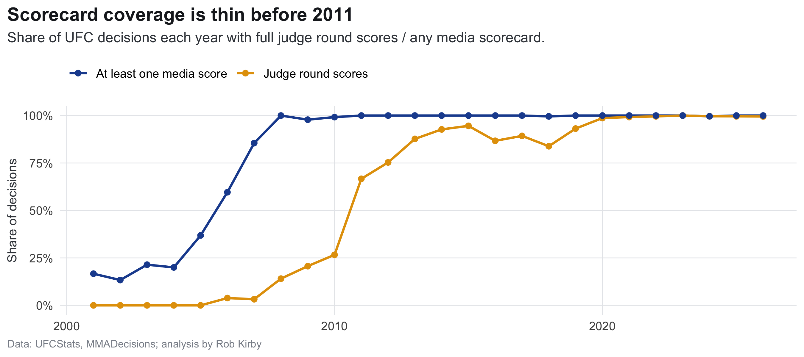
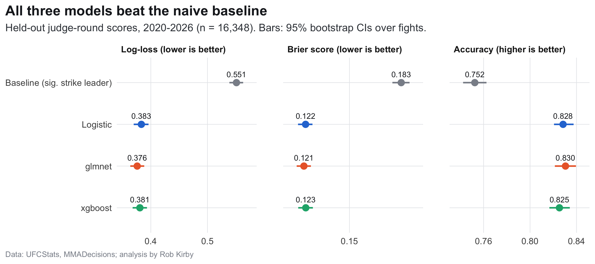
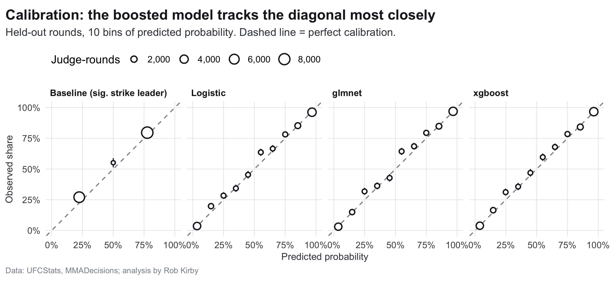
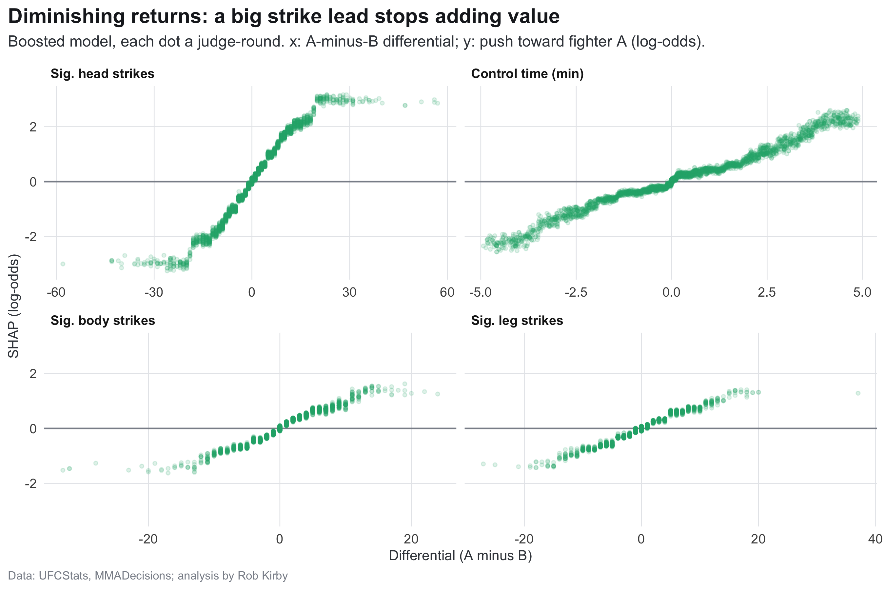
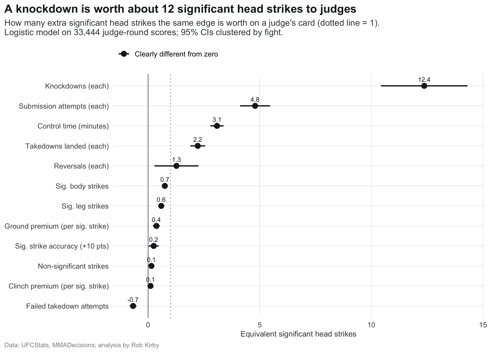

Every UFC fight’s round-by-round statistics: strikes by target and position, knockdowns, takedowns, submission attempts, reversals, control time
UFCStats.com blocks automated requests with a bot challenge, so the project uses a public mirror instead of working around it
MMADecisions
Each judge’s round-by-round and total scores; media scorecards
Collected with the site owner’s permission, slowly (1.5–3 s between requests) with an honest user agent, every page cached
BestFightOdds
Historical opening and closing betting lines
robots.txt allows crawling; collected politely and cached
Coverage. 4,109 UFC decisions from 2001 to November 07, 2026. Every one has full round statistics. 3,448 have every judge’s round-by-round scores (sparse before 2011; card totals exist for all). 51,355 media scorecards in all. Closing odds cover 94.7% of decisions since 2007.
Show code
cov |>select(year, `Judge round scores`= round_scores, `At least one media score`= media_any) |>pivot_longer(-year) |>ggplot(aes(year, value, colour = name)) +geom_line(linewidth =0.9) +geom_point(size =1.8) +scale_colour_manual(values =c("#1F4E9E", "#E3A008"), name =NULL) +scale_y_continuous(labels = scales::percent) +labs(title ="Scorecard coverage is thin before 2011",subtitle ="Share of UFC decisions each year with full judge round scores / any media scorecard.",x =NULL, y ="Share of decisions", caption = SOURCE_CAPTION) +theme_robbery()

Linking the sources
The sources spell names differently (“Jacaré” vs. “Ronaldo Souza”) and can date events a day apart. Fights are matched on event date (±1 day) and both fighters’ names, using fuzzy name similarity in either order.
4,083 links are high confidence.
26 medium-confidence links (nicknames and aliases) were all checked by hand.
14 MMADecisions decisions don’t link, and all of them were later overturned (mostly to no-contests).
The declared winner agrees between the sources in every linked fight.
Data problems found and fixed along the way:
Point deductions. MMADecisions round scores include deductions (109 deductions in 105 fights). A 10-9 round with a point taken from its winner reads 9-9. Deducted points are added back before modeling, so the outcome is each judge’s own call on the round, and the simulation then subtracts them from every simulated card. Only 25 judge-rounds are genuine 10-10s.
Fighter order. UFCStats lists the winner first for fights before March 2010 and the red corner first afterwards. All core models are corner-symmetric, so this doesn’t affect them; analyses where the corner matters use only fights from March 21, 2010 onward.
A handful of cards whose round count disagrees with UFCStats, or whose rounds don’t sum to the card total, are dropped.
The round model
Unit: one judge’s score of one round (33,444 judge-rounds, 3,620 fights). Outcome: the fighter that judge gave the round to.
Features: A-minus-B differentials for that round only:
knockdowns;
significant strikes by target (head, body, leg), plus clinch and ground premiums;
non-significant strikes;
significant-strike accuracy;
takedowns landed and failed takedown attempts;
submission attempts and reversals;
control time.
No fight result, method or other-round information is used.
Corner symmetry. Red-corner fighters are usually favourites, so a naive model would learn “red corner wins”. Every training round is mirrored (once from each fighter’s side), and every prediction is symmetrised, so swapping the fighters gives exactly 1 − p.
Models (tidymodels):
logistic regression;
regularised logistic regression (glmnet) with nonlinear terms and interactions;
gradient boosting (xgboost).
All are tuned with grouped cross-validation by fight (no fight is split across folds). They’re tested on a time-based split: train 2006–2019, test 2020–2026.
Show code
plot_model_comparison(mt)

All three models beat the naive “significant-strike leader wins” baseline by a wide margin (test accuracy 82.5%–83.0% vs. 75.2%). They’re close to each other.
Show code
plot_round_calibration(mcal)

The final model is xgboost. It gives up about 1% of log-loss to glmnet but is the best calibrated. Calibration matters most here, because round probabilities are combined across rounds and judges, and close rounds are exactly where disputed decisions come from. The reason the linear models lag is visible in the boosted model’s SHAP values: judges’ reward for a strike lead flattens out once a round is clearly won.
Show code
plot_shap_dependence(sd)

What judges reward
For interpretation we use the logistic model, whose coefficients convert into an exchange rate: how many significant head strikes each edge is worth on a judge’s card.
Show code
plot_what_judges_reward(le)

From rounds to a decision: the simulation
Judges watch the same fight, so their round calls are correlated. Each judge’s call is modelled as a shared “what everyone saw” factor plus individual noise. That keeps each judge’s own chance of giving fighter A the round equal to the model’s probability, while letting judges agree more often than independent coin flips would. The correlation is estimated by maximum likelihood from how often the three real judges split.
Judges split on 22.0% of rounds. The correlated model predicts 22.2%; independent judges would split 35.9% of the time.
Then, for every fight:
10-8 rounds come from a separate model (P(10-8 | winner of the round), using knockdowns, strikes, control and submission attempts, plus an era flag), with its own between-judge correlation.
10-10 rounds are rare and come from a small model based on round closeness and era.
Out-of-fold probabilities. For fights whose own scorecards were in the training data, round probabilities come from models that never saw that fight (10-fold, grouped by fight).
10,000 sets of three scorecards are simulated. A fighter wins with at least two cards; anything else is a draw. Point deductions are applied.
This gives P(A wins), P(draw) and P(B wins), and the Robbery Score = 1 − P(declared winner wins).
Two checks back this up. A simpler direct fight-level model agrees closely. And on older fights that only have judges’ card totals (never used in training), the simulation predicts each judge’s card winner about as well as on the rest.
Limitations
Statistics can’t see everything. Damage, power, a fighter being hurt without a knockdown, octagon control and aggression are invisible to the counts. A high Robbery Score means the stats disagree, not that the judges were wrong.
Early data are thinner. Statistics for older fights were coded from video years later, and judges’ round scores and media cards are sparse before 2011. Older entries carry a limited corroboration flag.
Scorecard availability. The round model is trained on fights with judges’ round scores (mostly 2011 onward) and applied to all fights.
Correlated judges are modelled with a single, league-wide correlation.
Corner order on UFCStats is known only from March 2010, so red-corner analyses start there.
Associations, not causes. Every judge, era and market comparison is observational.
Reproducing this project
renv::restore() # exact package versionstargets::tar_make() # rebuild everything from cached data# Then render the site: quarto render analysis/
MMADecisions and BestFightOdds pages are collected by scripts/run_mmad_scrape.R and scripts/run_bfo_scrape.R (slow by design, and cached). The UFCStats mirror is downloaded at build time.